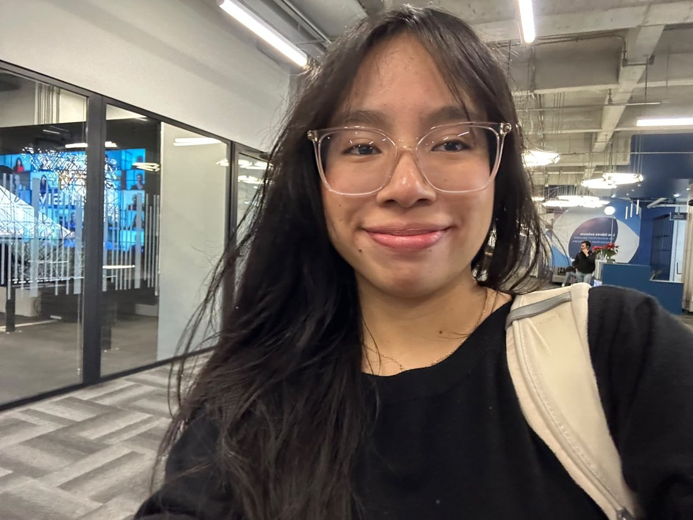
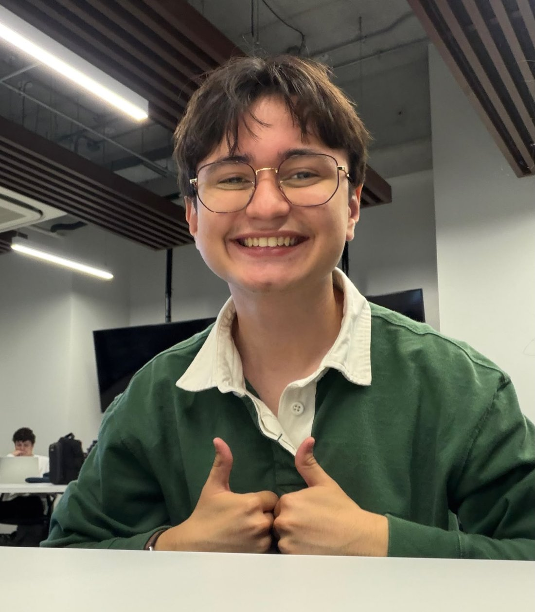
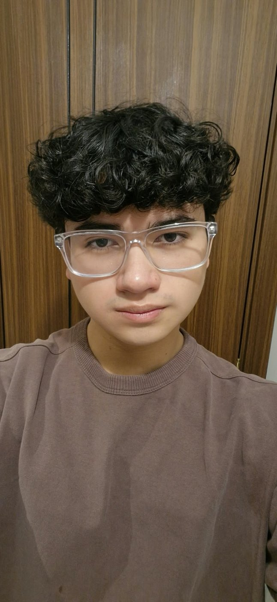
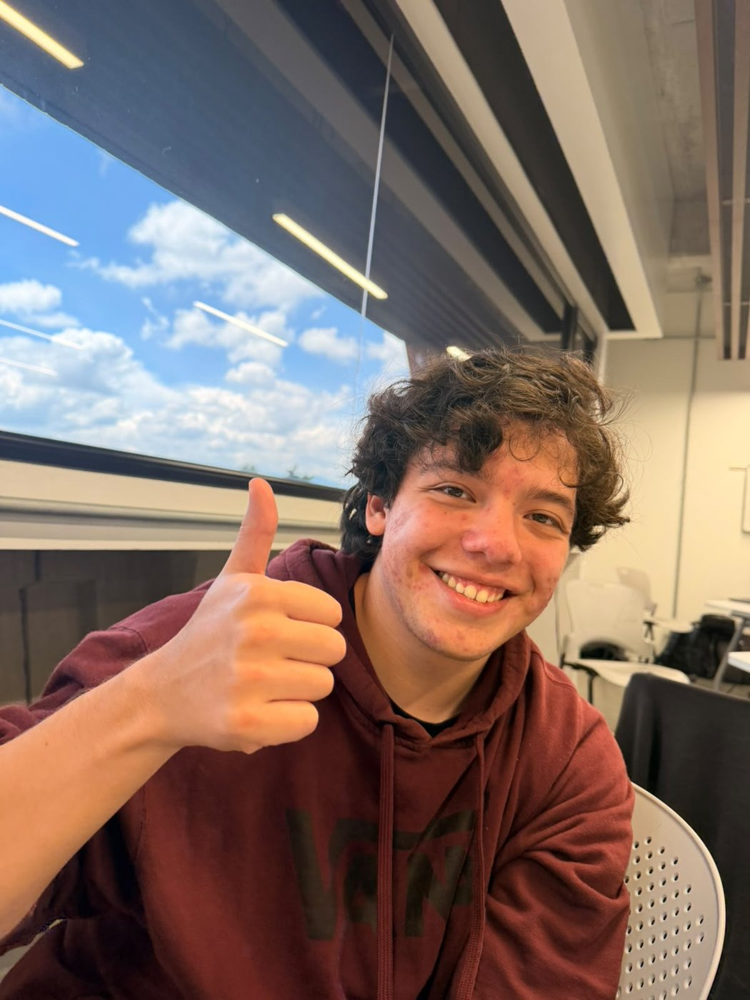
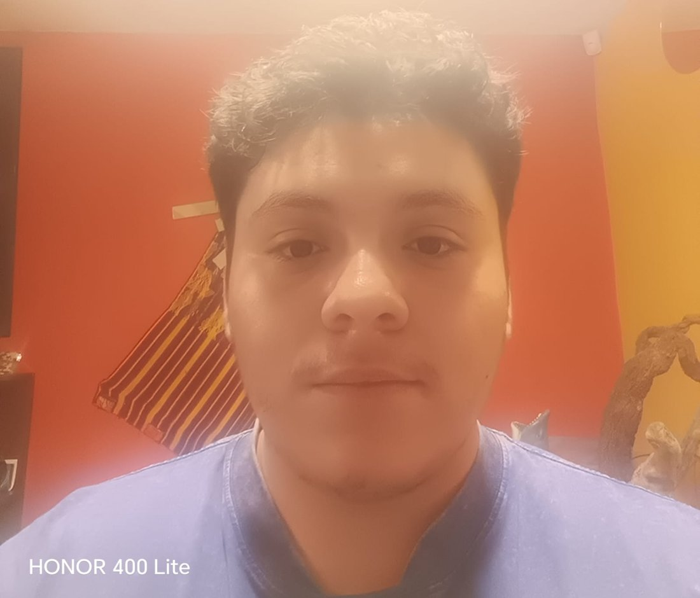
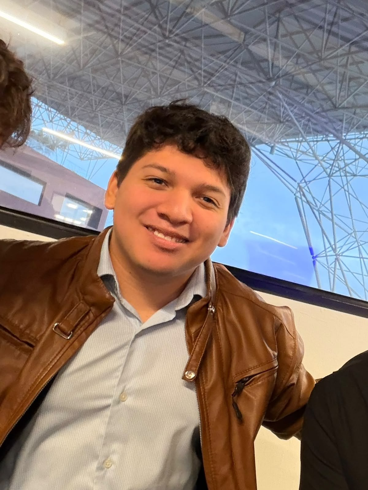

INTEGRANTE · LOS KEKES
Emily Menchú
Carné 20472
CAPÍTULO 06 / NUESTRO EQUIPO
QUIÉNES HACEN ESTA REVISTA
Siete voces, una revista. Conoce a las personas detrás de Guatemala, medida en vidas.
Conoce al equipo ↓El equipo detrás de las historias
06 / 06Un espacio para presentar a nuestro equipo, con sus fotografías y datos académicos.

Carné 20472

Carné 26805

Carné 26693

Carné 26961

Carné 26963
Carné 26085

Carné 26968
Esta revista reúne distintas miradas sobre el desarrollo humano en Guatemala. Gracias por recorrerla con nosotros.
Volver a todos los capítulos ↗